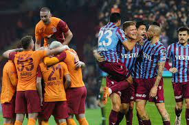

Global
Rusya-Ukrayna Gerginliği

Rusya Federal Güvenlik Servisi'nden (FSB) yazılı açıklamada, Kerç Boğazı'na ilerlediği öne sürülen Ukrayna donanmasına ait "Donbas" adlı geminin rotasını geri çevirdiği belirtildi. AA'nın haberine göre; açıklamada, geminin, Rusya'nın taleplerine karşılık vermediği, faaliyetlerinin ise kışkırtmaya yönelik ve deniz seyrüseferi açısından tehlike oluşturduğu iddia edildi.Ukrayna Savunma Bakanı Oleksiy Reznikov, Ukrayna merkezli Lb.ua sitesine yaptığı açıklamada, "Rus gizli servisinin bir kurtarma gemisini tehdit olarak görmesi şaşırtıcı. Azak Denizi paylaşılan bir denizdir ve orada yasalara uygun şekilde bulunuyoruz." dedi. Azak Denizi ile Karadeniz'i birleştiren Kerç Boğazı, Rusya'nın Kırım'ı yasa dışı ilhakından bu yana zaman zaman Rusya ile Ukrayna ve Batılı ülkeler arasında gerginliğe sahne oluyor
Kültür-Sanat
Vizyona girecek filmler
Çok uzak olmayan bir gelecekte Todd Hewitt, gezegenlerine düşen bir
uzay gemisinden sağ kurtulan Viola ile karşılaşır. Todd’un yaşadığı
gezegende bütün kadınlar yok olmuştur ve yaşayan erkekler ise
“Noise” ile etkilenmiştir. “Noise” erkeklerin tüm düşüncelerini
dışarıya görünür şekilde kılan bir güçtür. Bu tehlikeli alanda
Viola’nın hayatı tehdit altındadır ve Todd onu korumaya yemin eder.
Bu zorlu yolculukta Todd kendi gücünü keşfeder ve gezegenin karanlık
sırlarını gün yüzüne çıkarır.
Diğer filmler ise; "In From the Cold (Dram-Bilim-Kurgu)", "Hadi Be(Komedi)", "Angry Birds-Yaz Çılgınlığı(Animasyon, Komedi, Çocuk)","The Ice Age Adventures of Buck Wild (Animasyon, Çocuk), "Suspicion(Dram)"
Sağlık
Kış Aylarında Bağışıklık Nasıl Kuvvetlendirilir?
Kış aylarında bağışıklık sistemini güçlendiren besinler Soğuk havalarda bağışıklığı güçlendirecek besinler hakkında bilgiler paylaşan Diyetisyen ......, "Kışın bağışıklık sistemini koruyucu özelliği olan A ve C vitamini gibi antioksidan vitaminlerden zengin, havuç, brokoli, kabak, lahana, karnabahar, maydanoz gibi sebzelerin yanı sıra kış aylarında bolca bulunan portakal, mandalina, elma gibi meyvelerin tüketimi önemlidir" dedi. Kış mevsiminde havaların sıcaklığındaki değişimler ile birlikte genellikle yağlı ve şekerli besinlerin tüketiminin artış gösterdiğine dikkat çeken Beslenme ve Diyet Kliniği'nden ......, kışın bağışıklığı güçlendirmek ve kilo almamak için dikkat edilmesi gerekenleri anlattı.
Spor
40 Yıllık Hasret Sona Erecek Mi??
Trabzonspor 40 yıllık özlemini sonlandırmak için tam gaz yoluna devam ederken, üç büyükler teknik direktörlerinden kaynaklanan bir belirsizlik içinde ayakta durmaya çalışıyorlar. İşin doğrusu bu üç takım için de lig bitmiş durumda. İşte bu kriz gibi görünen ortam aynı zamanda bir fırsattır.Pazar günü oynna ve Trabzonspor'un son dakikalarda bulduğu gollerle kazandığı galibiyet, bu hasreti dindirme noktasındaki inanmışlığında bir göstergesidir.